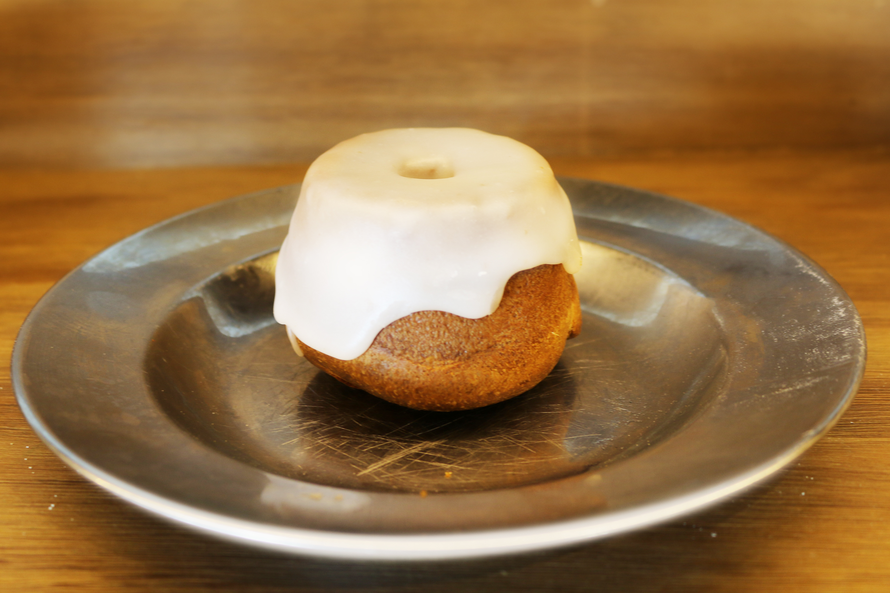

Sweetroll
Mainpage

The most iconic yet simplest dessert in all of Skyrim is the Sweetroll. This treat earns its fame from a dialogue line said constantly by Skyrim's guards expressing their annoyance,
"Let me guess...someone stole your Sweetroll?". While this line is said sarcastically it is not surprising to think someone would steal this delectable dessert. In Skyrim, it is easy to make
but in real life it has proven to be a little more challenging. Just don't let anyone get their hands on yours...
Ingredients
- 1 large bundt tin (or 2 smaller ones)
- 2 cups plain flour
- 1 tsp baking powder
- 3/4 cup milk
- 3/4 cup water
- 1/2 cup caster sugar
- 1 cup maple syrup or honey
- 3 eggs, beaten
- 60g butter, melted
- 1 vanilla pod, scraped
- 3 tsp cinnamon powder
For Glaze
- 1 cup melted butter
- 1 cup icing sugar
- 1 vanilla pod, scraped
Steps
- Preheat oven to 200C/392F and grease your bundt tin well with butter.
- In a large mixing bowl, combine all the baking ingredients and mix well. Pour into the bundt tin/s and bake for 45 minutes, or until brown and risen. It should be firm and crusty on the outside. Flip onto a wire rack to cool before transferring to a plate.
- For the glaze, combine the melted butter, sugar, and vanilla in a small bowl and whip until well blended. Drizzle over the top of your sweetroll and wait til icing has hardened before eating.